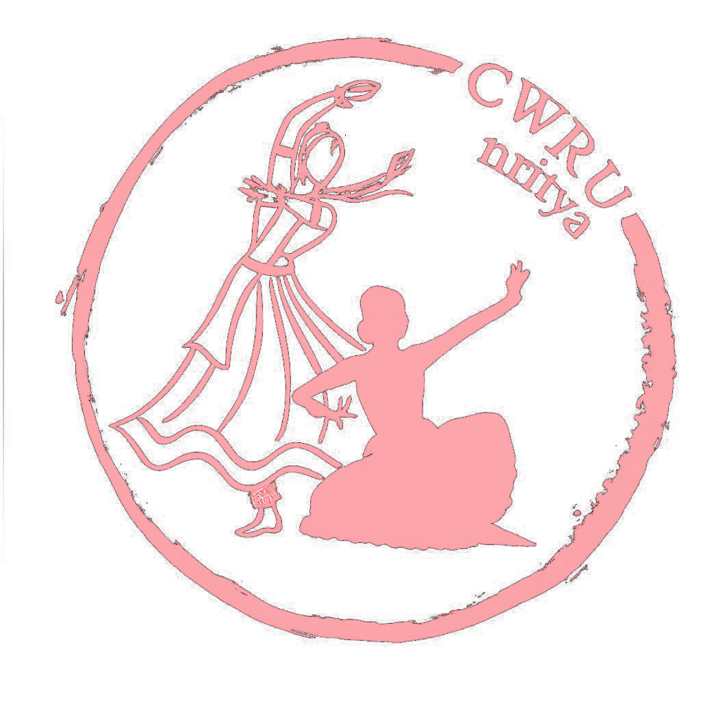

CWRU's NRITYA and NAADAM present
Stories of the Gods, brought to the stage
In Eldred Hall from 3–5 PM

CWRU Nritya is Case Western Reserve University's premier Indian classical dance team with expertise in Bharatanatyam, Kuchipudi, Kathak, and Odissi. From staging productions with live orchestras and choreographing for wedding sangeets to supporting campus philanthropy events like Spartanthon, Nritya is a vibrant part of the community. They take pride in performing across Cleveland, from the Cultural Gardens to the Cleveland Museum of Natural History, with pieces that portray meaningful stories from Hindu mythology, historical events, and contemporary themes.
This past year, Nritya made their return to the national competition scene after several years and placed 3rd at Motor City Dhamaal.
CWRU Nritya is Case Western Reserve University's premier Indian classical dance team with expertise in Bharatanatyam, Kuchipudi, Kathak, and Odissi. From staging productions with live orchestras and choreographing for wedding sangeets to supporting campus philanthropy events like Spartanthon, Nritya is a vibrant part of the community. They take pride in performing across Cleveland, from the Cultural Gardens to the Cleveland Museum of Natural History, with pieces that portray meaningful stories from Hindu mythology, historical events, and contemporary themes.
This past year, Nritya made their return to the national competition scene after several years and placed 3rd at Motor City Dhamaal.